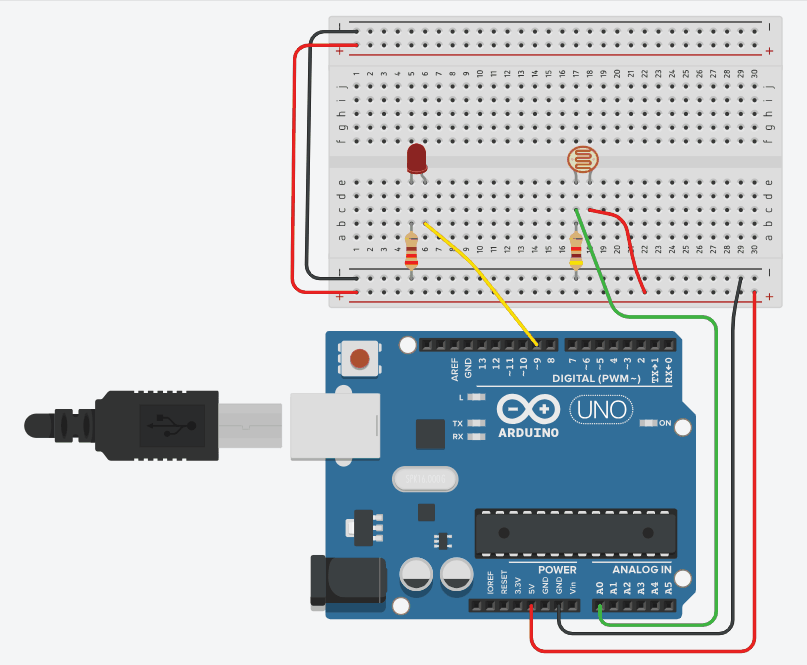

Interfacing Photoresistor and Led with Arduino:

ARDUINO CODE
/* ----------------------------------------------------------- Objective: Measure ambient light using an LDR and adjust LED brightness based on the light intensity. Components: - LDR + 4.7 kΩ resistor (voltage divider) - LED + 220 Ω resistor - Arduino Uno Working: The LDR changes its resistance with light. A voltage divider outputs a varying voltage to A0 (0–5V). Arduino reads this value (0–1023) and maps it to 0–255 to control LED brightness on pin 9 using PWM. ----------------------------------------------------------- */ int sensorValue = 0; // To store analog value from LDR const int ldrPin = A0; // LDR output to analog pin A0 const int ledPin = 9; // LED connected to PWM pin 9 void setup() { pinMode(ldrPin, INPUT); // LDR analog input pinMode(ledPin, OUTPUT); // LED output Serial.begin(9600); // Initialize serial monitor } void loop() { sensorValue = analogRead(ldrPin); // Read LDR value (0–1023) Serial.println(sensorValue); // Display light intensity int ledValue = map(sensorValue, 0, 1023, 0, 255); // Map to brightness analogWrite(ledPin, ledValue); // Set LED brightness delay(100); // Delay for stability }
Start Simulation